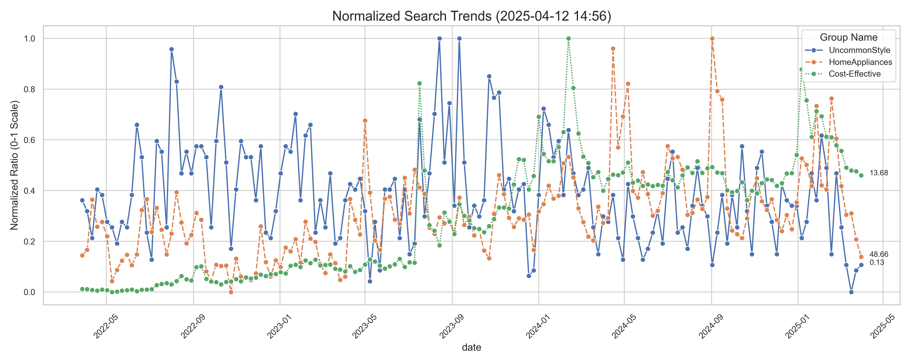
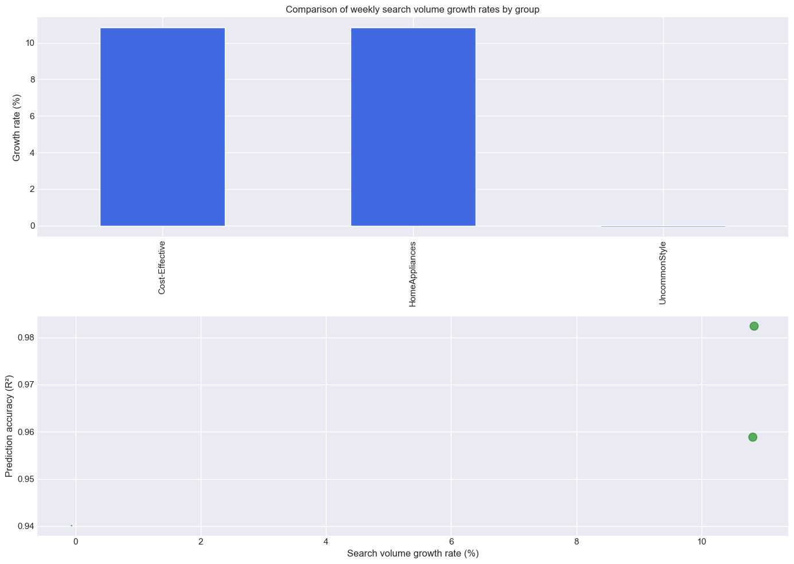

2025 라이프스타일 트렌드 인사이트
실시간 검색 트렌드

각 그룹별 정규화된 검색 비율 추이 (2022-04 ~ 2025-04)
그룹별 비교 분석

Cost-Effective 트렌드 분석
주간 성장률:
10.84%
계절성 피크: 2월 (3.605%), 1월 (3.153%), 9월 (0.287%)
6개월 예측 성장:
-8.91%
모델 정확도 (R²): 0.98
HomeAppliances 트렌드 분석
주간 성장률:
10.82%
계절성 피크: 7월 (7.204%), 5월 (6.731%), 2월 (1.956%)
6개월 예측 성장:
32.56%
모델 정확도 (R²): 0.96
UncommonStyle 트렌드 분석
주간 성장률:
-0.07%
계절성 피크: 8월 (0.067%), 2월 (0.057%), 1월 (0.056%)
6개월 예측 성장:
-0.12%
모델 정확도 (R²): 0.94
※ 결과 해석 주의사항
R² 값이 음수인 경우: 기본 예측 모델(평균)보다 성능 낮음
트렌드 지수: 실제 관측치 기반 계산 (예측 신뢰도와 무관)
붉은색 표시: R² < 0 (모델 개선 필요)